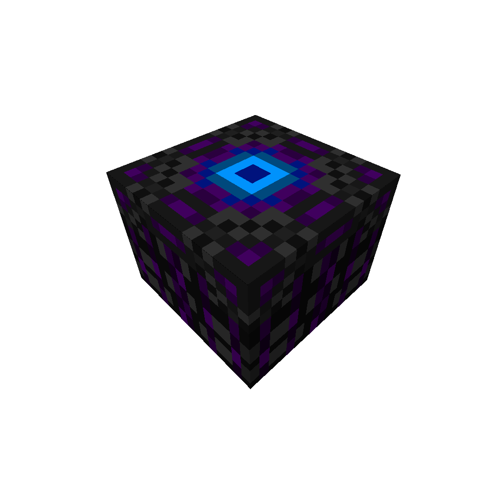
Improbability Table
This table is used to create the Entity Repellents using Entity Inoessence and bottles.

This table is used to create the Entity Repellents using Entity Inoessence and bottles.
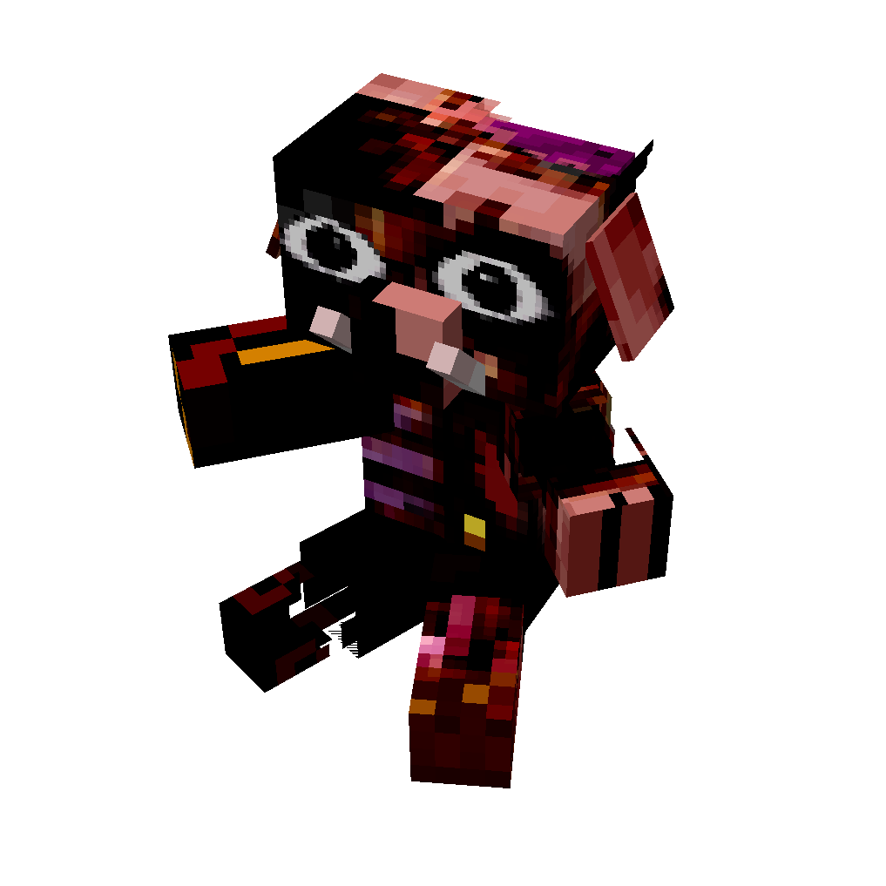
This plushie when smelted will transform into his Inoessence, when right clicked it will move his ears and make a cute sound :3
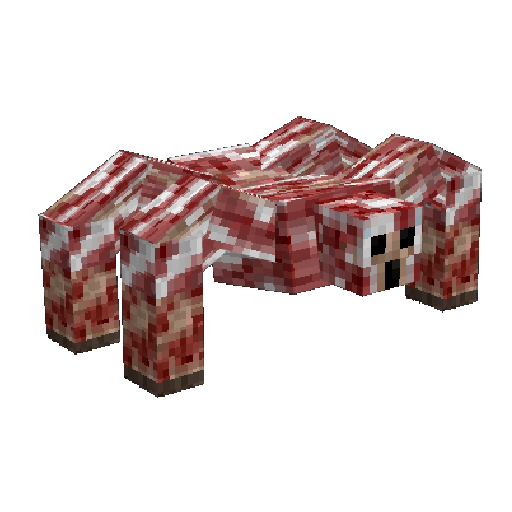
This plushie when smelted will transform into his Inoessence, when right clicked it will dance and make a cute sound :3
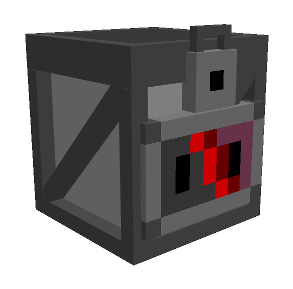
It can be found in the attic of the Abandoned VHS House, it can only be opened with a Monochromatic Key, when opened it will drop 4 items related to Porky.
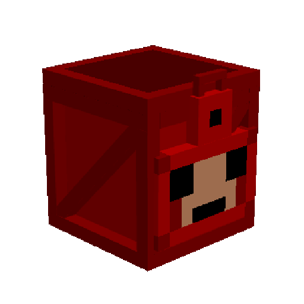
It can be found in a sealed room of the Ruined Hospital, it can only be opened with a Abandoned Key, when opened it will drop 4 items related to Oveji Jones.
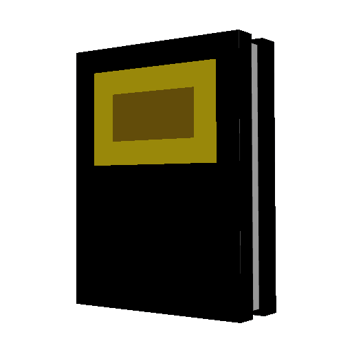
This manual will let the player know how to survive every entity of the mod as long he has his achievement unlocked.
RECIPE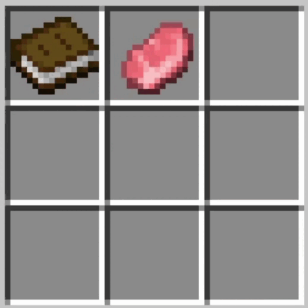
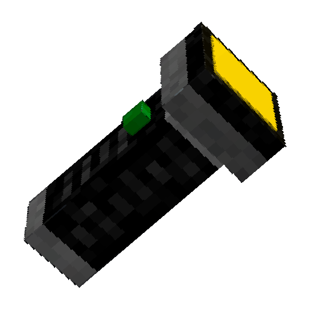
It will help the player to see in dark spots, and helps to see some entities lurking in the dark.
RECIPE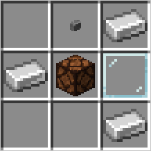
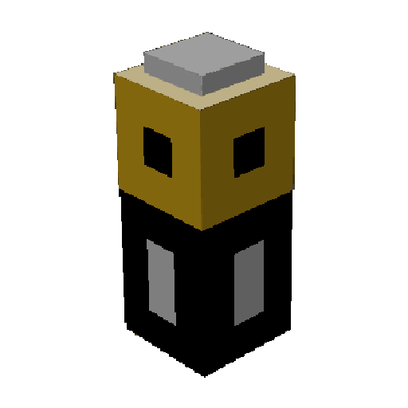
You can use this to recharge your flashlight when you waste the current battery.
RECIPE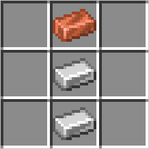
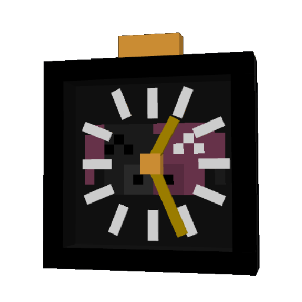
This item can alter the entire month once per day for each player, its the only way to change the entities selection manually.
RECIPE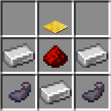
This item is useful to confuse mobs and even blind players, some legends say that the darkest entities are scared of it's power.
(DON'T YOU DARE ENCHANT THIS ITEM, IT'S POWER IS BEYOND IT)
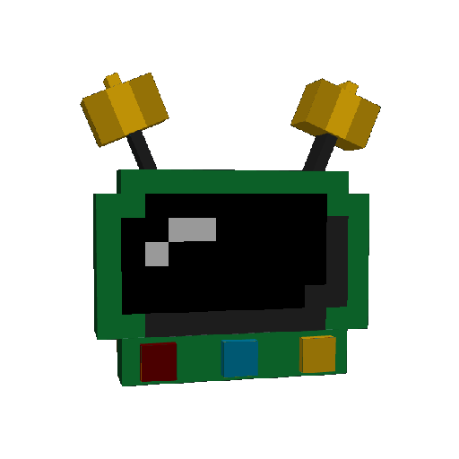
This item will help the player see where are the Entities in a range of 100 blocks.
(DON'T YOU DARE ENCHANT THIS ITEM, IT'S POWER IS BEYOND IT)
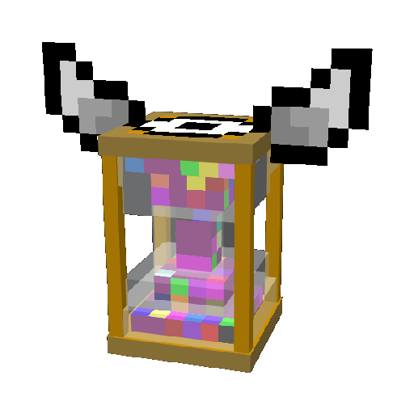
When used, this item will gave the holder the effect: "Time Flies" for 1 hour.
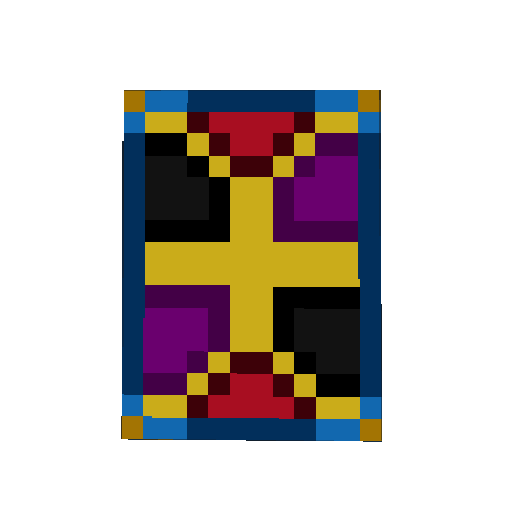
If you're beign target and you're close to another player, you can hit him with this card to swap the omen and make him the main target.
When weared it woulnd't let the player unequip it forever, he must die or survive an Ominous Entity, if the player survives the entity it will be granted with more Keys than normal, but the round would be more difficult.
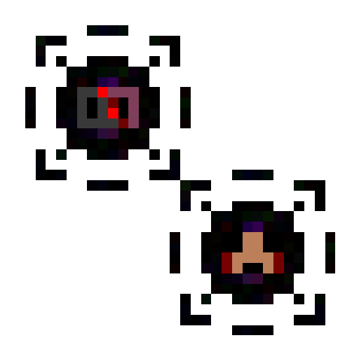
These items are created by exploding a Plushie, you can use it to create Entity Repellents.
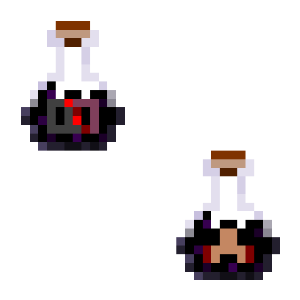
This is used to prevent a certain entity to spawn, this effect longs 15 minutes.
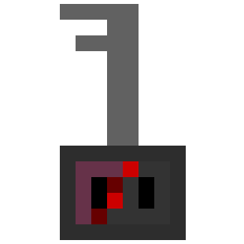
This key can be obtained after surviving to Chaser, the probability increase every Chase but resets if the player dies.
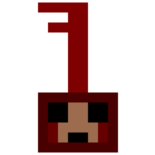
This key can be obtained after surviving to Haunter, the probability increase each Haunt but resets if the player dies.
Those coins will let you buy things at the "Mark's bullshit backyard".